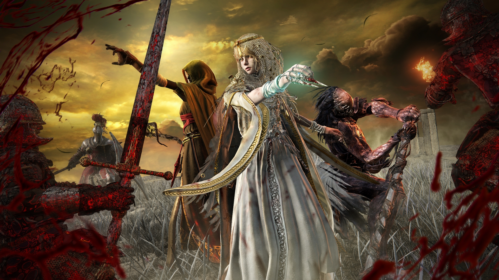

Ein Schatten liegt über dem Zwischenland. Der Erdenbaum hat sein goldenes Leuchten verloren und Limveld ist in Dunkelheit gehüllt. Tretet ein in eine Welt, die euch alles abverlangen wird.

Elden Ring Nightreign ist kein gewöhnlicher DLC, sondern ein eigenständiges Koop-Spin-off im Universum von Elden Ring. Entwickelt von FromSoftware und veröffentlicht durch Bandai Namco, schlägt der Titel eine ganz neue Richtung ein. Unter der Leitung von Game Director Junya Ishizaki (der bereits als Designer an Bloodborne und Dark Souls mitwirkte) verschmilzt die klassische Action-RPG-DNA von FromSoftware hier mit innovativen Roguelike- und Battle-Royale-Elementen. Die Geschichte spielt in einer parallelen Realität, in der George R.R. Martins Hintergrundgeschichte des Hauptspiels keine Rolle spielt.
Nightreign ist ein kompromissloser 3-Spieler-Koop-Survival-Hit. Anstatt wie im Hauptspiel nahtlos eine riesige offene Welt in eurem eigenen Tempo zu erkunden, herrscht hier ständiger Zeitdruck:
Ihr seid in Nightreign deutlich agiler unterwegs. Das Spektralross Sturmwind steht euch nicht zur Verfügung, dafür könnt ihr Klippen erklimmen, verstreute Sprung-Pads zu Fuß nutzen und euch von mystischen Astralfalken blitzschnell über die Karte transportieren lassen. Die Kämpfe bleiben der gnadenlosen Elden-Ring-Formel treu, wurden aber um mächtige neue Mechaniken wie Schleichangriffe und kooperative Kombos erweitert.
Euer Zufluchtsort zwischen den tödlichen Runs ist die verfallene Tafelrundfeste, die hier als Hub-Welt dient.